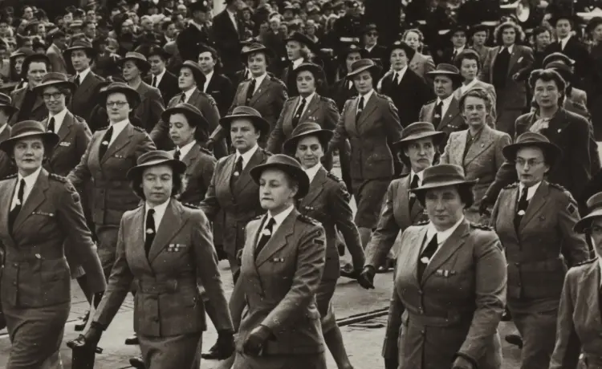
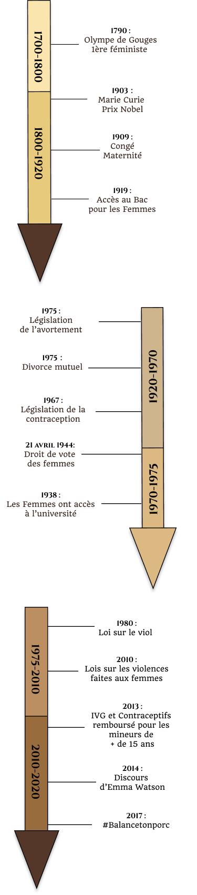

The female power
Women fight for their rights and their place in society since 1791 but the two world wars were decisive for the place of women. They showed the world that Women are as talented as men in factories.
The aftermath of the war They have helped to look at the work environment by redefining women’s prejudices and protecting them from the violence they may experience.
A global movement
From 1939 to 1945, women would never have expected to be so involved in society. Whether in England, France, in Australia and even in Canada, all women are involved in various sectors.
Australia, for example, has a the number of male soldiers who are too weak, women must go and fight for their country.They were not forced, the basis of their volunteering fully proves whether male or female, each in his place in all areas.
Other countries such as Italy, Canada, Finland and many others will mobilize women volunteers in many varied fields that normally were the responsibility of men.
This equality at the level of employment was already present when of the First world warbut it’s amplified when of the second.Women started working in the labour market long before factories and mainly in the sewing, fruit crafts and as teachers. The replacements of men in factories by women marked a real step towards gender equality.
Women’s Hope
As for the French women, they will not fight at the front. They’re just going to provide food assistance. and care. Everything is explained by the fact that they are at this time considered imprisoned and powerless. They have neither the right to vote nor the right to work and to own an account with money if the husband does not give his consent.
This aspect of imprisonment will therefore push many women to embark on aresistance. Women mobilizing will come from all over France with very varied ages. It goes from teenage girls like Germaine Tillion until Lucie Aubrac a married woman with children. Be a resistant is not a risk-free thing, it is illegal and women as for them simply want show that they must be free just like men
Post-war feminism
Equality between men and women jobs were only temporary during the war. Women just replaced the role of men because there was no no other choice. This is why after 1945 life resumes its course and inequalities are reinstalling. Until the day or the second wave of feminismemerged in 1960.
It will be based on the notion of women’s sexuality and not on the rights that it has, because we must first of all redefining prejudices about a woman. A large number of women join the movement, hoping for more recognition women who devote time to household chores. This is the base of sexuality because for years human beings associate woman with household and cooking.
Sexuality will include rape and domestic violence suffered by millions of women, which will cause many activists and demonstrations will take place, still today we are fighting for this cause and we have found several ways to the premeditated (such as numbers or steps to take in the event of distress, which did not exist 40 years ago).
The history of feminism in timeline
Next article

Would you like to see more?
Do not hesitate to look at the other articles proposed by other students.